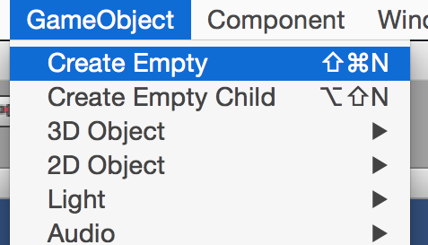
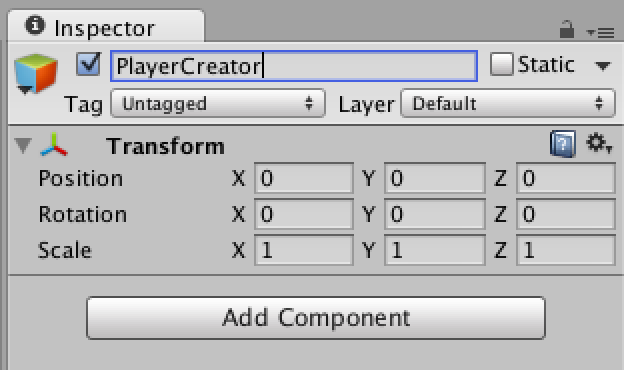
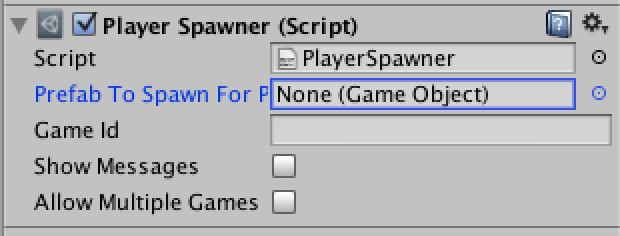
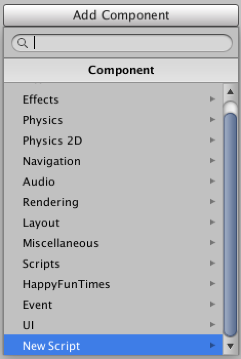
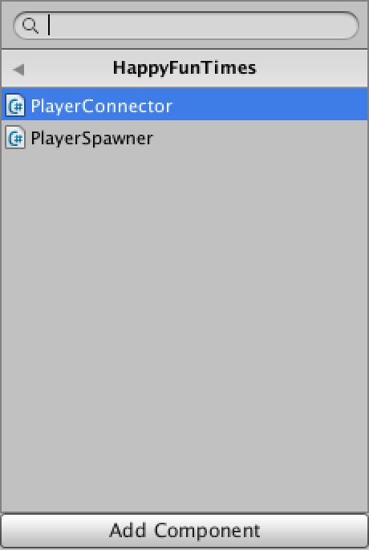
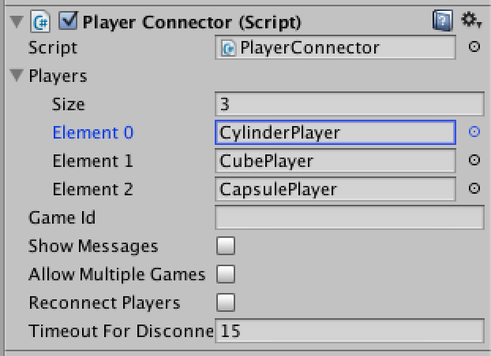

Spawning Players
It's probably easies to start with a working example but from scratch here are the steps.
The easiest thing to do when a player joins your HappyFunTimes game is to spawn a prefab. To do this
Make new
GameObject
name it something like "PlayerCreator" to help you remember what it's doing.

Click
Add Componentand then pickHappyFunTimes->PlayerSpawner

Select the prefab you want HappyFunTimes to birth each time a player connects

NOTE: There can only be one PlayerSpawner script in your scene
At this point, assuming you have a working controller, if you
run your game and open some browser windows to http://localhost:18679 you should
see your prefab being spawned. Of course it won't do anything yet.
Making your player respond to input
In your prefab pick Add Component->New Script

and name it something like PlayerControl

Then follow the code on this page
Controlling GameObjects already in the scene
HappyFunTimes is designed to support 10s, or even 100s of players but sometimes you just want to use it for a fixed number of players of GameObjects manually placed in the scene to use the phone as a controller.
The easist way to do this is to use the HappyFunTimes PlayerConnector script.
Make new
GameObjectname it something like "PlayerManager" to help you remember what it's doing.
Click
Add Componentand then pickHappyFunTimes->PlayerConnectorr
Open the player property and set the size to the number of players you support, then drag in each of your player GameObjects into the slots
Element 0,Element 1etc.
The first person to connect to your game will control the GameObject in the first slot, the second player to connect to your game will control the GameObject in the second slot etc ...
Making your players respond to input is the same as above.
Let's say your game supports 3 people and 6 people try to connect. The first 3 people will control the 3 GameObjects you setup. Their
InitializeNetPlayerfunction will be call. For the next 3 players theWaitingNetPlayerfunction will be called on the sameGameObjectas thePlayerConnnetor.If one of the first 3 people disconnects from the game one of the previously denied people will take their slot. Note: Your GameObject's InitializeNetPlayer will be called again. This is so it can pass you a new
NetPlayerobject to talk to the new player as wel as receive their name. It's up to you if you want to reset any state in the game or just have them continue from where the previous player left off.If you'd like a player to be able to reconnect and pick up where they left off sed the
timeout to disconnectsetting to how many seconds to give them to reconnect before giving that slot to a waiting player.In other words if you set
Timeout...set to 15 then a player that disconnects has 15 seconds to reconnect. If they don't reconnect in 15 seconds the next available player will take their place.Just like above making your player repsond to input requires you add a script to each player and have it have a
InitializeNetPlayermethod to receive theNetPlayerfor that phone.You also need to handle waiting players, telling them the game is full or to wait.
Letting everyone play
You can return a player by calling PlayerConnector.ReturnPlayer(someNetPlayer).
You'll have to get a reference to your PlayerConnector.
What do I mean by return the player?
Imagine you've made a game that supports only 4 people. There's 8 people
who have connected to your game. 4 of them are playing. 4 are waiting to play.
When a player dies you want the next player waiting to start playing. You can
do this by when a player dies calling thePlayerConnector.ReturnPlayer(netPlayerOfPlayerThatDied).
Similarly let's say you made a round based game. 7 people are connected
but the game only supports 4 players. You can call thePlayerConnector.FlushCurrentPlayers()
which will effectively call thePlayerConnector.ReturnPlayer(netPlayer) for every currently
connected player and so will swap in the next 4 players.
Things to be aware of
You'll get an OnDisconnect event (your OnDisconnect callback will be called)
when a player disconnects. When a new player connects whether it's the same user
who just disconnected or a new user connecting for the first time,
your InitializeNetPlayer function will get called with a new
NetPlayer object.
THE PHONE KEEPS NO STATE!! This means if you have a controller that changes modes you need to send whatever messages you've created to your controller to get it in the correct state.
For example, Let's say have a game with 2 modes. In one mode the phone shows 3 buttons (yes, no, maybe). In the other mode the phone shows a slingshot. When the game switches to players needing buttons on their phone or players needing slingshots on their phone you send a message to them you made up something like
class ShowControllerMsg {
ShowControllerMsg(string s) : { control = s; }
public string control;
};
m_netPlayer.sendCmd('showcontroller`, new ShowControllerMsg("slingshot"));
A player disconnects, a new player connects, that player is starting in the middle of the game. Their controller has not received a message that it needs to be showing the slingshot controls.
So, when your InitializeNetPlayer function gets called you need to send that
message to tell the phone to switch to slingshot mode.